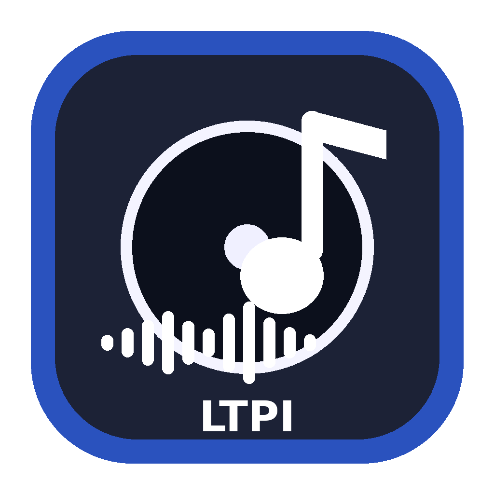
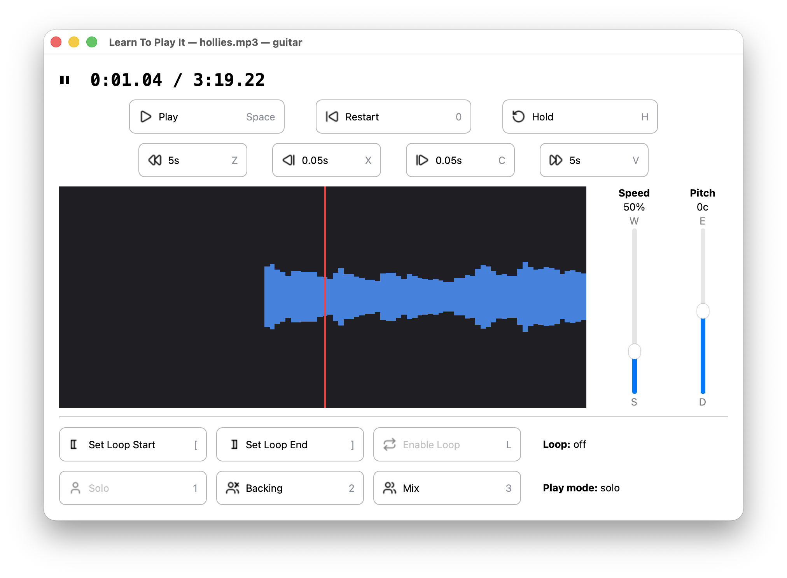

Learn To Play It
Isolate any instrument from a song. Slow it down. Learn to play it.
Download for macOS
Pick a part
AI source separation splits the song into its instrument stems — vocals, bass, drums, guitar, piano. Pick the one you want to learn.
Slow it down
Practice your part at slow speed, then progressively speed up as you learn it. Pitch-shift to match your instrument's tuning or your vocal range.
Lock to the beat
AI beat detection finds the tempo and downbeats, providing an intelligent metronome and count-in that follow the song's natural rhythm.
Loop and drill
Set precise loop points and drill specific phrases. Hold notes to aid tuning and chord finding.
Play along
Once you know the part, switch modes: hear the full mix minus your instrument and play along, like karaoke for any instrument.
Made for practice
Speed and pitch changes apply instantly with no playback pause. AI runs on your computer — no cloud, no subscription. Free and open source.